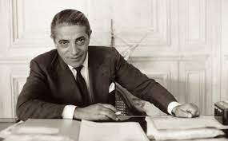

Aristotle Onassis
(20 January 1906- 15 March 1975)
One of the richest person in 20th century
Aristotle Socrates Onassis (20 January 1906 – 15 March 1975) commonly called Ari or Aristo Onassis, was a Greek shipping magnate who amassed the world's largest privately-owned shipping fleet and was one of the world's richest and most famous men. He was married to Athina Mary Livanos (daughter of shipping tycoon Stavros G. Livanos), had a long-standing affair with opera singer Maria Callas and was married to Jacqueline Kennedy, the widow of US President John F. Kennedy.

The following list is a time line of Onassis Life:
1906: Born in Karatas, Izmir, Ottoman Empire (now Karatas, Izmir, Turkey)
1922: He left from Smyrna during the great fire of Smyrna in 1922.
1929: He relocated to New York and started his shipping businesses.
1932: He went to Buenos Aires, Argentina and start working as a telephone operator.
1946: Onassis married Athina Livanos, daughter of shipping magnate Stavros G. Livanos and Arietta Zafrikakis, on 28 December 1946. The couple had become largely separated by the mid-1950s.
1950: Onassis had success whaling off the Peruvian coast.
1953: In Monaco he started to purchase the shares of Monaco's SMB using the tax haven of Panama and finally take the control of SBM.
1954: Cancelation of the agreement between the Saudi government and Aristotle Onassis to transport Saudi oil on his tankers and "in any case, to make the agreement ineffective".
1956: Aristotle Onassis signed a contract granting him the operational rights to the Greek air transport industry. Olympic Airways was founded.
1957: Onassis and opera prima donna Maria Callas embarked on an affair despite the fact that they were both married.
1966: Rainer of Monaco approved a plan to create 600.000 new shares in SBM reducing Onassis's stake to under a third.
1967: Onassis court until he left Monaco.
1968: Onassis announced the launch of Project Omega, a $400 million investment program that aimed to build considerable industrial infrastructure in Greece including an oil refinery and aluminum smelter.
1968: Onassis ended his relationship with Callas to marry Jacqueline Kennedy, widow of U.S. President John F. Kennedy.
1975: Onassis died at age 69 on 15 March 1975 at the American Hospital of Paris in Neuilly-sur-Seine, France, of respiratory failure, a complication of the myasthenia gravis from which he had been suffering during the last years of his life
Read more about Aristotle Onassis on Wikipedia